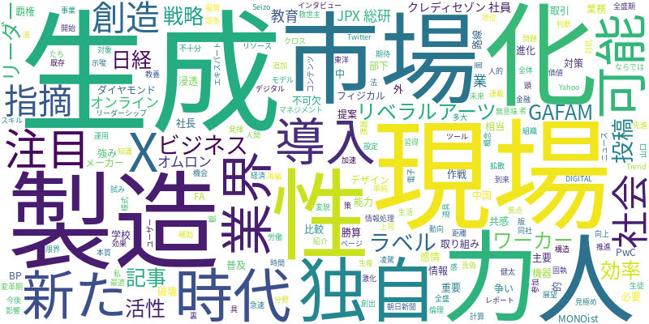

☁️ 今日のトレンドワード

📰 今日のピックアップニュース (10件)
AI社会到来！業界再編の波
PwCのレポートは、AIが社会に浸透し、主要業界が破壊と創造の変革期を迎えることを指摘。AI技術の進化は、ビジネスモデル、労働市場、そして私たちの生活様式に多大な影響を与え、新たな価値創出と同時に既存の構造を揺るがす可能性を秘めている。
X、AI生成投稿にラベル追加
X（旧Twitter）が、AIによって生成された投稿にラベルを付ける機能を導入。これは、急速に普及するAI生成コンテンツによる偽情報拡散への対策として期待される。しかし、その効果や運用面での課題も指摘されており、真偽の見極めにはユーザーの判断力も不可欠となる。
AI時代こそリベラルアーツ
AIの進化により、単純な計算能力や情報処理能力では人を超えることは時間の問題。日経BPの記事は、AIとの比較に固執するのではなく、リベラルアーツ（教養）を磨き、人間ならではの創造性、共感力、倫理観といった独自の強みを活かすことの重要性を説いている。
JPX総研、生成AIで市場活性化
JPX総研が、生成AIを活用した新たなサービスを開発・提供。これにより、市場取引の活性化や効率化を目指す。金融業界におけるAI導入は加速しており、この取り組みは市場参加者にとって新たな機会をもたらす可能性がある。
GAFAMも注目、日本の隠れた企業
生成AIの覇権争いが激化する中、GAFAMを凌駕する可能性を秘めた日本の「隠れた企業」に注目が集まっている。こうした企業は、独自の技術や戦略でAI市場における新たな地位を築きつつあり、その動向が注目されている。
クレディセゾン、全社員AIワーカー化
クレディセゾンは、全社員3700人を対象にAI活用を推進する「AIワーカー作戦」を開始。これにより、1500人相当の業務効率化を目指している。AIを組織全体で導入し、生産性向上を図る先進的な取り組みとして注目されている。
AI時代、リーダーに必要なこと
生成AIが普及する時代において、部下の感情に寄り添うだけではリーダーシップは成り立たない。ダイヤモンド・オンラインの記事は、AI全盛期だからこそ、リーダーが磨くべき「本質的なスキル」について論じ、共感を呼んでいる。
AI、教育現場での活用法
AIが教育現場に浸透する中、学校外でのAI活用に焦点が当てられている。AIを単なる知識習得のツールとしてだけでなく、生徒の「考える力」を高めるための補助具として活用する試みが紹介されている。
製造業、AIだけでは不十分
MONOistの記事は、AIが日本製造業の救世主となるには限界があり、「現場をデザインする力」こそが不可欠だと指摘。AI技術の導入だけでなく、それを活かすための現場の最適化や、人的リソースの活用が重要であることを示唆している。
オムロン、製造現場のAI戦略
オムロン社長が、製造現場へのAI提案における同社独自の戦略と勝算を語る。中国FA機器メーカーとの競争や、今後の事業展開について、「フィジカルAI」という概念も交えながら、その独自路線がもたらす未来展望を明かした。
AI技術の急速な進化が、社会のあらゆる領域に浸透し、破壊と創造の波を呼び起こしています。X（旧Twitter）ではAI生成投稿へのラベル表示が始まり、偽情報対策への一歩となりますが、その効果は未知数です。金融業界ではJPX総研が生成AIで市場活性化を図る一方、クレディセゾンは全社員のAIワーカー化で業務効率化を目指します。製造業においては、AI単体では限界があり、現場をデザインする力や、オムロンのような独自のAI戦略が重要視されています。また、AIとの比較に固執するのではなく、リベラルアーツを通じて日本独自の強みを活かすべきだという声も上がっています。教育現場でもAIは「考える力」を高める道具として期待されるなど、AI時代における人間の役割や、各業界が取るべき戦略が多岐にわたり議論されています。GAFAMのような巨大企業でさえも、生成AIの覇権争いの裏で、日本の隠れた企業の活躍に注目が集まるなど、AIを取り巻く情勢は日々変化し、新たな局面を迎えています。